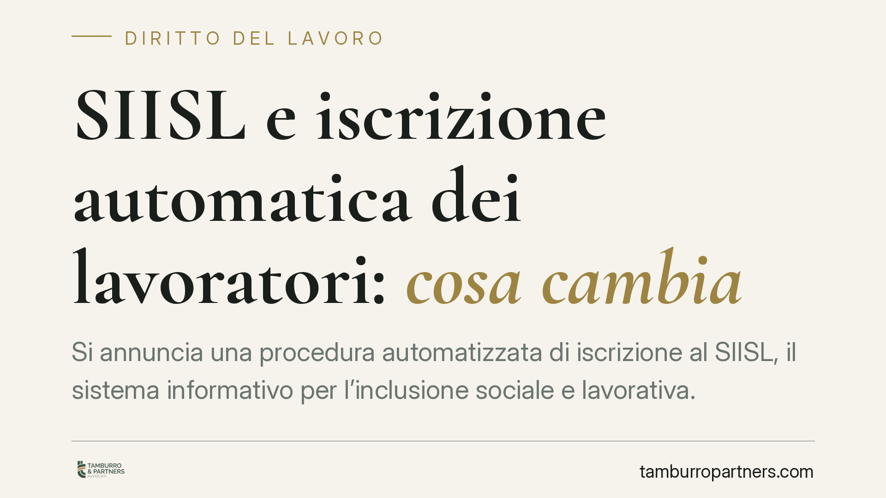

SIISL e iscrizione automatica dei lavoratori: cosa cambia
Si annuncia una procedura automatizzata di iscrizione al SIISL, il sistema informativo per l'inclusione sociale e lavorativa. Il meccanismo coinvolgerebbe più amministrazioni e opererebbe tramite l'interoperabilità tra banche dati. I riferimenti normativi vanno però verificati sulla Gazzetta Ufficiale prima di trarne conseguenze definitive. Vediamo cosa sappiamo, cosa resta da confermare e come muoversi.

Il fatto
Secondo le prime ricostruzioni, un decreto interministeriale — indicato con data 22 giugno 2026 e attribuito al Ministero del Lavoro, al Ministero dell'Interno e al Ministero degli Affari Esteri e della Cooperazione internazionale — introdurrebbe l'iscrizione automatica al SIISL per determinate categorie di lavoratori.
Una precisazione doverosa. Alla data di redazione, gli estremi del decreto (numero e data di pubblicazione in Gazzetta Ufficiale) non risultano verificabili con certezza. Trattiamo quindi il provvedimento come *da verificare*: quanto segue va letto come inquadramento del meccanismo, non come descrizione di un dato consolidato.
Che cos'è il SIISL
Il SIISL — Sistema Informativo per l'Inclusione Sociale e Lavorativa — è la piattaforma che collega politiche attive del lavoro, servizi per l'impiego e misure di sostegno. È stato istituito nell'ambito del D.L. 4 maggio 2023, n. 48, convertito con modificazioni dalla L. 3 luglio 2023, n. 85.
Sul punto occorre una cautela: la collocazione esatta della disciplina istitutiva all'interno del decreto (in alcune ricostruzioni richiamata all'art. 5) va confermata sul testo ufficiale. Consigliamo di verificare l'articolo puntuale prima di citarlo in atti o comunicazioni formali.
Come funzionerebbe l'iscrizione automatica
Il modello descritto poggia sull'interoperabilità tra banche dati di più amministrazioni. In pratica, i dati già in possesso degli enti verrebbero incrociati per generare l'iscrizione senza una domanda espressa dell'interessato.
L'iscrizione automatica non è, di per sé, un adempimento a carico del lavoratore. Tuttavia, ove il decreto fosse confermato nei termini annunciati, dall'iscrizione potrebbero derivare obblighi di attivazione o di partecipazione a percorsi di inclusione, con possibili conseguenze in caso di inerzia. Usiamo il condizionale in modo consapevole: finché la fonte non è verificata, qualsiasi affermazione su obblighi e sanzioni va assunta con prudenza.
Il profilo privacy
L'iscrizione d'ufficio comporta un trattamento di dati personali su larga scala, tra amministrazioni diverse. Si applica il Regolamento (UE) 2016/679 (GDPR).
Due punti meritano attenzione. Primo, la base giuridica: un trattamento di questo tipo, se fondato su una norma di legge, si regge tipicamente sull'adempimento di un obbligo legale (art. 6, par. 1, lett. c) o sull'esecuzione di un compito di interesse pubblico (art. 6, par. 1, lett. e). La scelta della base giuridica non è formale: incide sui diritti esercitabili dall'interessato, a partire dal diritto di opposizione, che opera diversamente a seconda del fondamento.
Secondo, la trasparenza: l'interessato deve poter sapere che è avvenuta un'iscrizione, con quali dati e per quali finalità (artt. 13 e 14 GDPR). L'automazione non elimina l'obbligo informativo.
Implicazioni pratiche
Per il lavoratore, il rischio concreto è trovarsi iscritto senza esserne pienamente consapevole, e quindi soggetto a eventuali oneri di attivazione non presidiati.
Per il datore di lavoro, l'interoperabilità significa che informazioni sui rapporti in essere alimentano il sistema. Ne discendono attenzioni sulla correttezza dei dati comunicati agli enti e sul coordinamento con gli adempimenti già dovuti.
Cosa fare in concreto
- Verifica la fonte: prima di agire, controlla gli estremi del decreto sulla Gazzetta Ufficiale (numero e data di pubblicazione). Non basare decisioni su ricostruzioni giornalistiche.
- Controlla la tua posizione: se sei un lavoratore potenzialmente interessato, accedi al portale SIISL e verifica se risulti iscritto e a quali percorsi.
- Conserva le comunicazioni: archivia ogni avviso ricevuto dagli enti; annota date e contenuti, utili in caso di contestazioni.
- Datori di lavoro, allineate i dati: assicuratevi che le informazioni trasmesse agli enti siano aggiornate e coerenti con i rapporti in corso.
- Presidiate il profilo privacy: individuate la base giuridica del trattamento e verificate che l'informativa agli interessati sia adeguata.
Dove verificare
La fonte ufficiale è la Gazzetta Ufficiale della Repubblica Italiana. Suggeriamo di consultarla direttamente per confermare gli estremi del decreto interministeriale e il contenuto vincolante delle disposizioni, distinguendolo dalle anticipazioni di stampa.
---
Contributo informativo a cura di Tamburro & Partners - Avv. Giuseppe Tamburro. Non costituisce parere legale.
Ogni storia di lavoro ha i suoi tempi.
Se gestisci HR e vuoi un confronto su contenzioso, ispezioni o licenziamenti, scrivi allo studio. Ti rispondiamo entro un giorno lavorativo.